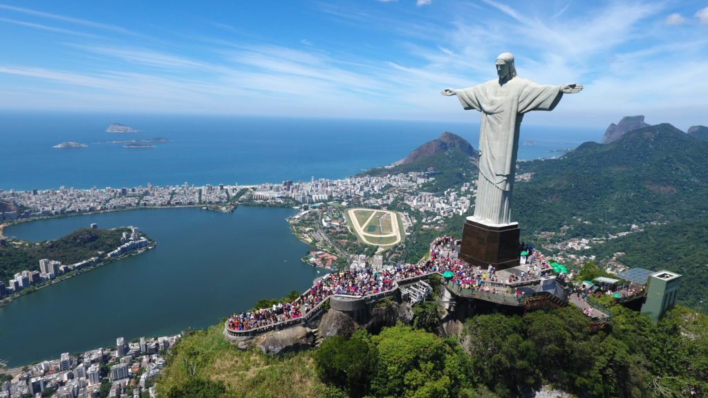
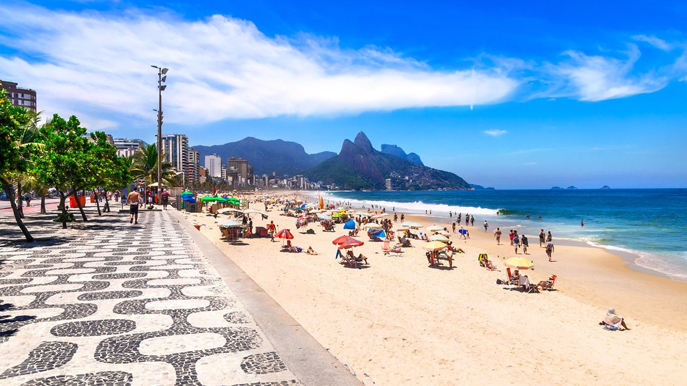

Localizada no sudeste do Brasil, o Rio de Janeiro é famoso por suas praias, montanhas e eventos culturais. Com um clima tropical e uma população acolhedora, a cidade atrai turistas do mundo todo.
Pontos Turísticos de Destaque

Cristo Redentor
Um dos cartões-postais mais famosos do Brasil, localizado no topo do Morro do Corcovado.

Praia de Copacabana
Praia icônica conhecida pelo calçadão, quiosques e eventos culturais ao longo do ano.
Pão de Açúcar
Montanha famosa com vista panorâmica da cidade, acessível por teleférico.
Curiosidades
- O Carnaval do Rio é o maior do mundo, com desfiles de escolas de samba e blocos de rua.
- A cidade possui cerca de 120 km de praias urbanas.
- O Cristo Redentor foi eleito uma das 7 maravilhas do mundo moderno.
- O Pão de Açúcar oferece uma das vistas mais incríveis da Baía de Guanabara.
O Rio de Janeiro combina natureza, cultura e diversão, sendo destino perfeito para turistas de todas as idades.